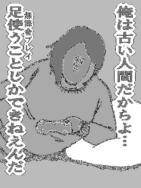

〜2012年4月上旬〜
検索結果は必ず中クリックしてるのでGoogleになんか設定ないかと「歯車」-「検索設定」してみたら、
結果ウィンドウ 選択された各結果を新しいブラウザ ウィンドウで開く。
てのを発見。これだ。
中クリックってホイールなのでたまに勢い余ってリンクじゃないとこをクリックしてたりするので、
普通に左クリックで済ませたかった。
1800通ほど。ちょっと減った。
全然知らなかったわけなんだけど、まあ、丁度いいので別なのを探す。
GFeedLineを使い始めた。notifyを有効にするとSEGV多発で困る。
面倒なので死んだらまた立ち上げるようにした。いいのか、それで。
夕方電車止まりそうということで、13時半に早くも帰宅命令が出た。
昨年、帰宅困難な状況が何度かあったので決断が早まったようで。
電車が止まりだしてから帰れと言われてもどうしようもないしねえ。
電車はすでに混んでいたが、まだ風雨もそれほどでもないので混乱なく帰宅できた。
Cygwinでdateを/dev/clipboardへリダイレクトするとなぜか書き込みエラーになってしまう。
% date > /dev/clipboard date: 書き込みエラー: Bad file descriptor zsh: exit 1 date > /dev/clipboard % date | putclip % cat /dev/clipboard cat: /dev/clipboard: Bad address zsh: exit 1 cat /dev/clipboard % echo hoge > /dev/clipboard % date > /dev/clipboard date: 書き込みエラー: Bad file descriptor zsh: exit 1 date > /dev/clipboard % cat /dev/clipboard hoge % echo `date` > /dev/clipboard % cat /dev/clipboard Wed Apr 4 14:13:04 JST 2012
catもできない。でもechoするといける。
メッセージから判断するとdateが余計なチェックしてるってことか？
これは盲点だった。ずっとLinuxにつないでたらアップデートできない。
更新するにはWindowsかMacでeBookなんとかってのを実行しないといけないようで。
CD-ROMを探したが全然見つからない。それもそのはずで最初からついてないのであった。
で、説明書読んだらなんとReader自身のメモリ内に存在すると。
なるほど。1.5GBもあるんだからCD-ROMなんて要らないわけだな。
というわけで無事更新完了した。
古い256MBしか本体メモリがないWindows XPではインストールすらできなかったが、
まあそれはそれ。
特にdateがだめというわけじゃなくて、echoしか受け付けないようで。
ほとんどのコマンドがエラーになる。いや全部かな。
rubyやperlだとエラーメッセージは出てないが書き込めてなかった。
Cygwin 1.7.13が出たので上げてみたけど変わりなし。
zshのせいかと思ってbashで試してみたが、やはりechoのみ成功する。
しかも内部コマンドのecho。/bin/echoでは失敗する。どういうこと？
つまり内部ならいいってことか。
% awk 'BEGIN{print "hogehoge" > "/dev/clipboard"}'
% cat /dev/clipboard
hogehoge
いけちゃったよ。
% echo foo > foo % cp foo /dev/clipboard % cat /dev/clipboard foo % date > /dev/clipboard date: 書き込みエラー: Bad file descriptor % date | tee /dev/clipboard 2012年 4月 7日 土曜日 01:10:15 JST % cat /dev/clipboard 2012年 4月 7日 土曜日 01:10:15 JST
どうやらそういうことのようだ。
結論: コマンド自身がopenすればいけるが、shellのリダイレクトだとだめ
連日通ってしまっているので対処。ここに出てくるebanはruby-list MLには登録してないアドレスなので、
Fromに含まれていたらブロックすることに。その後ログを見たらブロックされていたのでokだろう。
twitterでリストを作るとhttps://twitter.com/#!/ユーザ名/リスト名でアクセスできる。
しかし複数同じリスト名を作るとa, a-11, a-12,...とかURL上の違いで区別されるようになる。
名前としてはaがいっぱいできている。
これに気づかずに最初にaを作ってもう1個aを作って、ああ2つ作っちゃったってことで、
マージして片方消してとやったらa-11のほうが残った。
なんで-11なんかついてるのか不思議だったがこういうことだったようで。
でもいまbでやってみたら-12から始まってるな。まあいいか。
何を言いたいかというとGFeedLineで指定するにはこのURLのほうの名前を使わないといけない。
紛らわしいので一旦別の名前に変えて元に戻したほうがいい。そうすれば両方ともaになる。
convertの-depth 4にはいつも泣かされるが、これを最後に置くとだいたいうまくいくようだ。
オリジナル
% convert 852.gif -depth 4 -type grayscale 852-1.png

% convert 852.gif -type grayscale -depth 4 852-2.png
Gmailに届く全メール(spamを除く)をプライベートなGoogle Groupsへ転送してるんだけど、
先週からMLだけ届かなくなった。MLだけということで特定のフィールドがあやしいと1個ずつ地道に調べたら、
List-Id:がついてるとだめだとわかった。って、MLにそのフィールドはつきもんだよなあ。
Gmailは削りながら転送なんてできないし。困ったな。
まあ、Google Groupsをバックアップ代わりに使うほうが悪いが。
もう1個Gmailのアカウントを取るか。
ruby-talkのmirrorもそういうことなんだろうな。